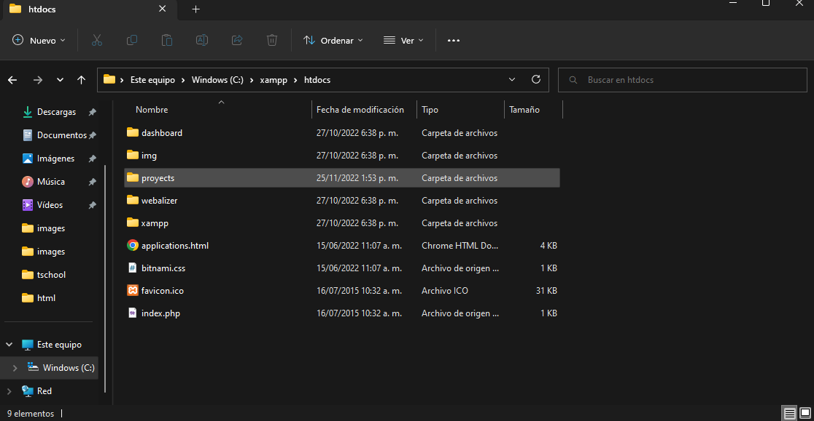
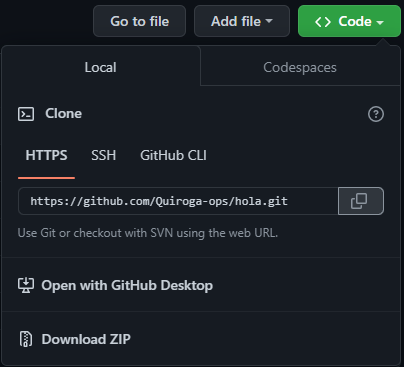
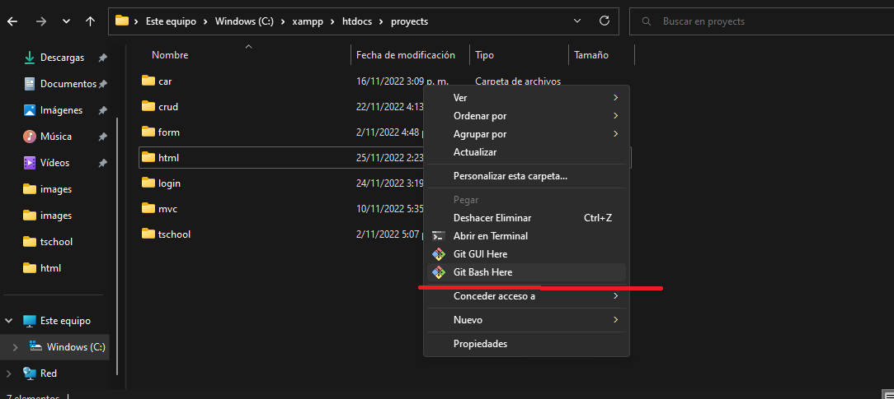
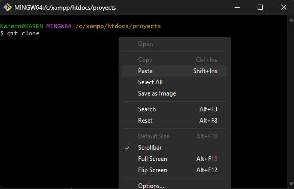
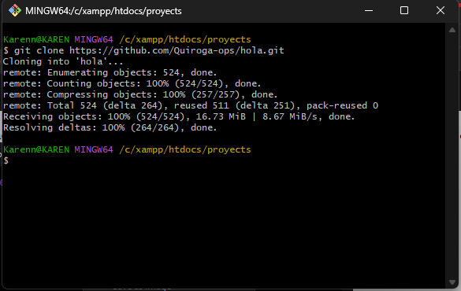
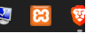
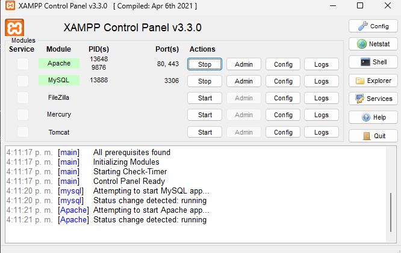
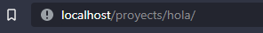
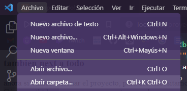
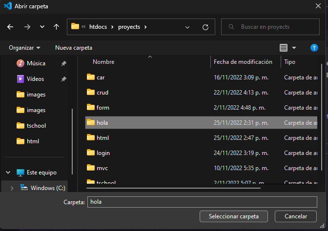

(HyperText Markup Language), “lenguajes de marcas de hipertexto” o en pocas palabras un lenguaje NO de programación. Para marcar con etiquetas "TAG"
"TAG's" de ejemplos,
Aqui un pagína web que no es mia,
pero es un ejemplo de muchas etiquetas HTML más comunes
Esta pagina se ve fea porque no tiene estilos CSS, pero se puede estructurar toda la pagina y al final darle los estilos.
aprender todo un lenguaje es demasiado complejo, por eso cuando no recuerdo como escribir una etiqueta o para que sirve basta tan solo con buscar en google.
ahora si vamos a clonar el proyecto, para eso necesitamos ir a la carpeta raiz de proyectos de XAMPP,
C:\xampp\htdocs y creamos una carta para almacenar todos nuestros proyectos en este caso PROYECTS

Dentro de esta carpeta estan nuestros proyectos, pero en esta ocasion vamos a clonar uno mio de la pagina de GITHUB Proyecto aquí
damos clic al boton verde que dice <> code
y copiamos el siguiente link,

tambien podemos descarlo pero en este caso lo vamos a clonar para que aprenda el proceso yo se que le puede servir
una vez copiado vamos a la carpeta de proyectos de XAMPP y damos clic derecho, git bash here

escribimos "git clone" y pegamos el link "git clone https://github.com/Quiroga-ops/hola.git" y damos enter, ya clonamos el proyecto.


ahora solo nos queda abrirlo desde el navegador, ejecutamos la herramienta XAMPP

y en la interfaz de XAMPP presionamos "start" en estos dos botones para que queden en verde

si no le salen en verde debemos realizar otro proceso pero esperemos que si. si no me avisa.
una vez en verde ya podemos ver el proyecto clonado. vamos al navegador y en la barra de direcciones escribimos nuestro dominio que en este caso como es dominio local seria: LOCALHOST. / el nombre de la carpeta de los proyectos / el nombre del proyecto.
de la siguiente manera,

ya lo clonamos, para editar la web entre 2 o mas personas le explico luego porque ya es con mas tiempo de aprendizaje pero, este proyecto que acabamos de clonar usted lo puede editar a su antojo y no se va a dañar mi trabajo ni el de la nube, con confianza.
con VISUAL STUDIO CODE o cualquier otro editor de texto que prefiera incluso desde el blocl de notas jajaja
en esta misma direccion web puede ver sus cambios.
para ver todo el codigo y todos los archivos. desde visual studio busca la carpeta que clonamos. en C:\xampp\proyects\hola.

